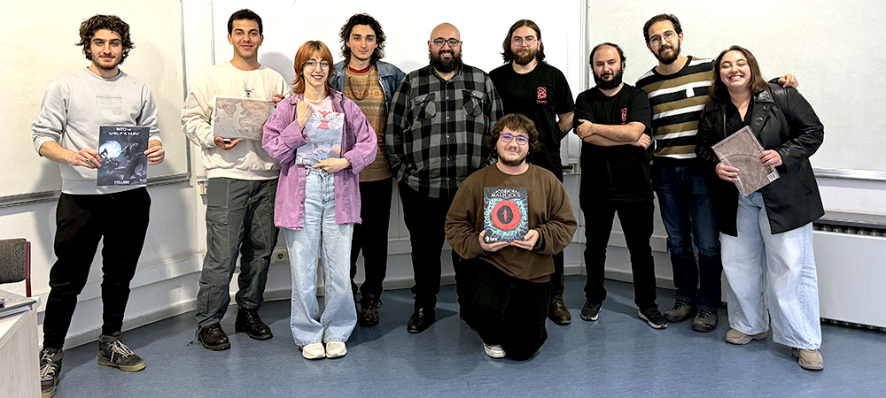
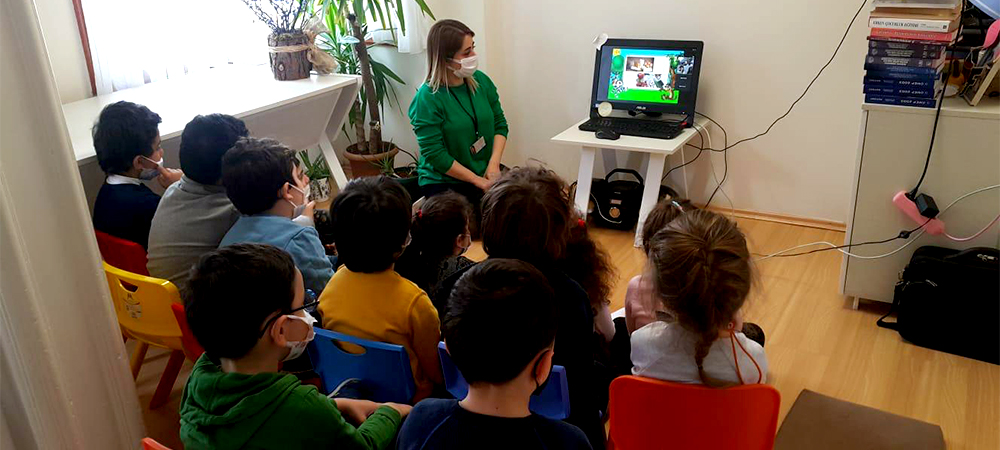

Education
Bilkent University
The Department of Psychology
- September 2021 - Ongoing [Anticipated Graduation: June 2025]
- Ankara, Turkey
- Bachelor of Arts programme in Psychology, minor in Molecular Biology and Genetics
- Relevant Courses: Psychodiagnostics, Experimental Psychology, Behavioral and Cognitive Neuroscience, Child and Adolescent Psychopathology, Clinical Interview Skills and Techniques, Psychology of Play, Learning and Memory, Perception, Attention, and Action, Statistical Methods in Psychological Science I & II, Research Methods in Psychological Science I & II, Social Psychology, Individual Differences and Personality, Developmental Psychology, Advanced Cognitive and Social Development, Neuropsychology, Abnormal Psychology, Clinical Psychology, Psychological Testing and Measurement, Professional Communication
- Senior Project (Individual): Ongoing research on the impact of fear on decision-making, aiming to examine the motivational influences of fear on people’s decision-making processes, supervised by Assoc. Prof. Robert Ian Bowers; currently in the planning and literature review phase; filmed a fear-inducing scenario from first-person view using GoPro and created a decision-making task with interactive video on Stornaway, plan to measure participants' physiological responses (heart rate, galvanic skin response) via Arduino Uno, and analyze data on MATLAB
-
Select Academic Work:
- Directed Research in Psychology (Individual Project): Conducted a literature review about the effect of fear on decision-making and the neurological, physiological, evolutionary, and innate bases of fear; wrote a research proposal for examining how immediate fear influences individuals' decision-making which became the basis of my senior project
- Professional Communication (Group Project): Proposed an app for Bilkent University to increase accessibility to mental health services for students and staff called PsycSync, prioritised the necessary services by interviewing students confidentially to figure out which services they needed the most but did not have easy access to at Bilkent, came up with possible solutions, and highlighted the need integrating the school's gym facilities for fitness training to complement mental health resources
- Distinctions: High Honor Roll (2023-2024 Spring), Honor Roll (2022-2023 Spring, 2021-2022 Spring, 2021-2022 Fall)
Altinbas University
Faculty of Dentistry
- September 2018 - October 2021
- Istanbul, Turkey
- Moved on from the Bachelor of Dentistry programme to change career path after completing 196 ECTS of coursework and achieving a GPA of 2.98/4.00
- Relevant Courses: Psychology for Health Sciences, Ethics and Professionalism in Health Sciences, Behavioral Management, Advanced Research Methodology I & II, Digestive System and Metabolism, Cardiovascular and Respiratory System, Pathology, Pharmacology, Pediatric Dentistry, Nutrition, Health Services Administration, Endocrine and Urogenital Systems, Infectious Diseases and Immunity, Tissue, Skeleton and Nervous Systems
Internship & Research Experience
Bilkent University
Bilkent Development Laboratory (Bil-Ge)
Undergraduate Research Assistant
- September 2022 - Ongoing
- Ankara, Turkey
- Assisted mothers during children's participation in experiments and tests in a research project about mothers' epistemological backgrounds on their children's social cognitive development, overseen by Assoc Prof Dr Hande Ilgaz
- Trained in the Dimensional Change Card Sort (DCCS), unexpected location experiment paradigm, content false belief, appearance reality tasks and more to become a well-rounded research data transcriber and practitioner
- Coded and transcribed data from a graduate research experiment’s participant self-report of memories according to variance in cognitive process descriptions
Ozge Ismailoglu Counselling
Clinical Intern
- January 2025
- Clinical Intern
- Shadowed and was trained in doing intake interviews for adult, child, and adolescent clients in varied types of therapy such as CBT for all clients, online EMDR and psychodrama group therapy, and play therapy for children
- Learned about and analyzed the use of the Wechsler Intelligence Scale for Children Fourth Edition (WISC-IV) and Denver II Developmental Screening Test assessments for children patients and their treatment plans
Ceresta Counselling Centre
Clinical Intern
- September 2024
- Gaziantep, Turkey
- Observed kids during play therapy sessions and the applications of MOXO Attention Tests for both children and adolescents while shadowing multiple therapists
- Under therapist supervision, familiarized myself with the files of the children and families coming in for sessions and discussed with the therapists after sessions what physical behaviours the children showed during therapy, what were the families' main concerns, whether the children manifested relevant symptoms and what the next step in their therapy and treatment may be depending on each case
- Aided families and children during group workshops
Gaziantep Temel YAPA Preschool
Intern
- August 2024
- Gaziantep, Turkey
- Shadowed the institution's psychologist during orientation to observe whether the kids were regulating well and assessing the special attention they might need according to their developmental strengths and weaknesses in light of their medical and psychological diagnoses such as Down Syndrome or autism spectrum disorder
- Assisted the youngest kids in classes (ages 2-3)
TED University
Real Life Cognition Lab
Intern / Research Assistant
- June - August 2023
- Ankara, Turkey
- Transcribed physical self-report data to the digital database and coded data related to autobiographical memories in English and Turkish based on whether narratives were chronologically or thematically coherent to investigate whether reminiscence functions moderate the relationship between well-being and narrative coherence
- Collaborated with data coder partners to increase interrater reliability, supervised by Prof Dr T. Uzer Yildiz
Bilkent University
Comparative Cognition Lab
Undergraduate Research Assistant
- February - June 2023
- Ankara, Turkey
- Watched hours of experimental videos and coded qualitative data for canine cognition and behaviour compared to that of their owners versus strangers (experimenters)
- Compared codes with partners to increase interrater reliability among other research assistants and partners
- Attended weekly discussion meetings about comparative psychology led by biologist Dr Kaan Kerman
Leadership Skills

Bilkent Wizards
- September 2023 - Ongoing
- Currently serving as a member of the supervisory board in charge of inspecting events and their planning stages
- Was on the Executive Board with the responsibility of coordinating activities and creating event calendars
- Managed the social media accounts and was in charge of sharing news, responding to comments and feedback, and creating visual content such as an annual recap video that documented the finished events of the year
- Handled the correspondence of the club between other societies and international publishers to generate sponsorships and gain access to relevant media for club activities

Young Dentist Association
- October 2020 - June 2021
- Formed the new working relationship between Altinbas University and the Young Dentist Association
- Represented the Altinbas University student body in the Educational Congress and Conference Operation Commission
- Initiated, planned and executed a program for preschools to teach them about dental health and familiarized them with the process of losing their primary teeth
Academic Enrichment
American Psychological Association (APA) Continuing Education Courses
- September 2024 - Ongoing
- Became an Undergraduate Student Affiliate Member (ID C2405095566)
-
Take the following courses to expand academic knowledge of Psychology topics beyond the Bilkent curriculum from the APA Office of Continuing Education in Psychology:
- Personalizing Psychotherapy: Assessing and Accommodating Patient Preferences (1.5 CE Credits)
- Psychological Assessment of Bipolar Spectrum Disorders: A Multimethod Approach (3 CE Credits)
- Current Trends and Best Practices in Developmental Disabilities Assessment for Autism and Intellectual Disability (3 CE Credits)
- The KSADS-COMP for Child Psychiatric Diagnostic and Intake Assessment (2 CE Credits)
- Promoting Fair and Equitable Cognitive Assessment of Diverse Children and Adolescent Populations (1.5 CE Credits)
Extracurricular Activities
Turkish Family Health and Planning Foundation Academy
- September 2024 - Ongoing
- Participate in workshops on safe sexuality, societal gender equality, and dating violence within the scope of the Youth Studies Volunteering project
- Plan to conduct peer studies within universities, prepare brochures to use in college studies and to set up an informational table for World AIDS Day (December 1st) to raise social awareness of these issues
- Took courses on safe sexuality, societal gender equality, and dating violence and earned certifications
Bilkent Psychology Society Member
- 2021 - Ongoing
- Moderated a session on inhibitory neuronal circuits in sensory processing with Dr. Thomas Frank for Bilkent Genetics Society and Bilkent Psychology Society as part of the IX Neuroscience Days
Fotokolektif Gallery and Atellier
- September 2024
- Took lessons in portrait photography from professionals
Short Movie Production: Pseudo Baby
- June 2024
- Scripted a ten-minute-long short psychological horror movie for the Introduction to Screenwriting course at Bilkent University
- Filmed a two-minute trailer for the movie using stop-motion techniques with self-produced photographs and sound effects
Erasmus+ Youthpass: "Together for Mental Health Awareness
- September 2023
- Attended workshops on positive psychology, managing anxiety, life trees, and many other ways to promote positive mental health and share our experiences in London, UK, and earned a certificate
- Created a poster for primary, secondary and high schools about how to sustain good dental health and disseminated them to local schools and websites
Skills
Technical:
- Python
- Spyder
- Jasp
- MegaStat for Excel
- Microsoft Office
- Adobe (Lightroom, Premier Pro, Photoshop)
- WriterDuet
Language:
- Turkish (Native)
- English (Advanced, TOEFL Sep 2024 Total Score 106/120)
- Spanish (Beginner)
Sports:
- Swimming
- Diving
Interests:
- Script writing
- Film making
- Creative writing
- Photography